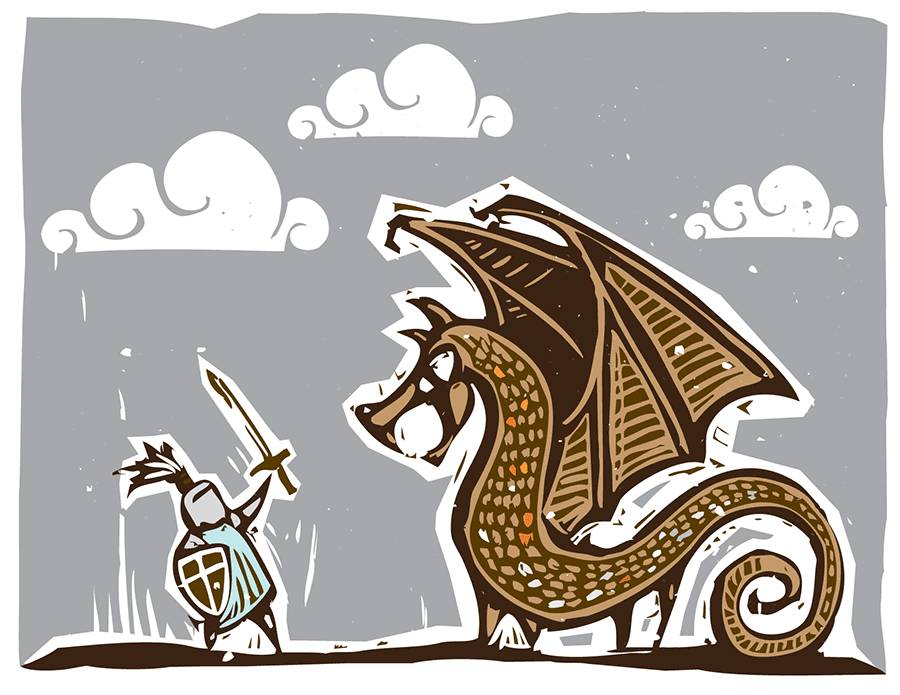

和程序员打官司的第一季结束，第二季即将开始
Contents

我之前写过一篇文章，“和程序员打官司是一种怎样的体验”，讲了起诉杭州麻瓜网络科技有限公司（公众号“差评“运营方）疑似抄袭案的事情。经过漫长的审理（2006年1月7日立案），于近日收到了判决书。
判决书详情见文末。这里先说结论：
法院认为我的证据不足，驳回诉讼请求。这里特别要说明的是“驳回我的诉讼请求”和“被告胜诉”是完全不同的概念。这里法院并没指出“差评”运营方是正确的，判决书的表达方式是：“原告目前提交的证据和对证据的使用方式，不够法院支持原告的诉讼请求。” 如果我们有新的证据或者新的逻辑，都可以重新起诉或者继续上诉。我们当然会继续上诉的。
在上一篇文章里面我说过“至于本案结果，它反而不那么重要。” 这桩案子是我在文章使用不常见短句（“文字信标”）做为反抄袭办法之后的第一桩正式诉讼，我的目的是看看法院“如何看待”这件事，并且增强和改进它。如果我们相信最终中国原创作者可以通过司法形式对抗“洗稿”这种抄袭方式，无论胜负，我做的这些事情都会是历史中的一个小剧情。最终还需要更多的作者、技术、法律人士共同努力才能完成。
判决书本身比结果更有趣。
这份判决书至少帮我们证明了这样几件事：
1 微信公众号作者是否可以证明自己是文章著作权人。
因为非认证公众号不显示拥有者全名，也不显示身份证信息，所以需要某种方法来证明两者之间的关联。
判决书告诉我们“通过在开庭时，使用法庭电脑登录公众平台，显示公众号信息，以及在已发送信息中找到涉案文章”，法院核对公众号后台信息和起诉书时候，即可认定两者关联，对霍炬是这篇文章作者这个事实予以认定。（见判决书第6页）
2 从境外网站截屏获取的信息是否可以做为法庭证据
法院认为“互联网是互联互通的虚拟世界，从境内截屏经过公证，属于境内取得证据，不属于域外证据”，因此是可以做为法庭证据的。 (见判决书第7页)
3 关于侵权争议本身
我们提交的证据里面包含了18处雷同情节的对比。法院接受了这18处情节对比，但认为原告的独创性不够，所以没支持此证据。
我使用的“文字信标”方式也做为证据提交了。起诉书里面对这部分的描述是“1800字的文章中，这二个语句仅17个文字，3个字母，所占比例极小，也并非核心内容”，没支持此证据。
当然这个部分我是不认同的，任何hash值或者密文相对于全部内容比例都很小，因此而不认定为证据是不合理的。不过这些留着在上诉时候继续讨论吧。
判决书里面包含了双方提供的证据和答辩，大家有兴趣可以自己看。另外，之前因为保密原因，我之前文章里面没有提供起诉书和证据，现在判决书里面都包含了，欢迎大家一起研究。法律上是否起诉成功是一方面，但每个人都会有自己的判断，相信看到这些证据，你也会大致有一个判断。
另外法律意义上说，因为上诉期还没过，这份判决书尚未具有完全法律效力。如果我们成功上诉，那么二审判决书才是终审。现在还不是做最终结论的时候。如果二审和一审结果一样，那也没关系，至少我们确认了这项技术在法律上不够有用的原因，再去想办法完善它即可。
不过，被告方已经忙着把起诉书某些部分截屏发朋友圈庆祝自己胜诉了。首先这种庆祝来的有点早。其次，我之所以没有在更早的时候发这篇文章，就是等着你们这么做，旁观者可以去翻翻法律，看看判决书，对比下我和对方谁的描述更正确，谁提供了更完整的信息，谁更专业。谢谢被告方在这件事上又配合了我一次。
最后还想对各位原创作者说：不要怕法律麻烦，也不要在意一时不利。如果你觉得自己没错，又难以维权，坚决应该起诉，去法院说说理。中国不是英美法系，无论我这个案子输赢，都不会对你造成影响。但起诉的人多了，也许就会有人胜利。如果你认为原创作者的权利应该得到保护，洗稿的行为应该被惩罚，就从自己做起吧。诉讼是个漫长的过程，这个案子进展了一年，但大多数时间都是等待结果，并不耗费太多精力。不是很多认为的个人难以承受的行为。以此为样本，大家也多去试试吧。
判决书下载，我把它放在了七牛云存储上。11MB的PDF，除了把我身份证打了码没做任何修改。
最后，再次感谢快版权、浙江秉格律师事务所，感谢严飞律师和他专业的团队，感谢当初为了此案联系我的Vivian Huang，感谢所有关心，惦记，多次询问这件事的各位朋友和我的读者。我在之前“快播案”的文章中提到过，我是一个业余法律爱好者，是各位的帮助，让我这个业余法律爱好者的胡思乱想，终于完成了第一步验证，下面还会有第二步。
其他的不多说了，我们中院二审见。
参考备注：
- 标题图：勇者斗恶龙。这正是目前实际情况的写照，我一个人对抗了一家拿了投资，业内资源不错的公司，这事不容易，但是还是值得做。Image used under Standard license from Shutterstock.com （这张图是我们付费购买的，转载也可直接使用，不用换掉它）
- 前情提要：不需要无限只猴子的创新抄袭 这篇文章讲述了我如何找到被告的真实身份
- 和程序员打官司是一种怎样的体验 这篇文章讲了我为什么要打这个官司
- 原始文章：Telegram传奇：俄罗斯富豪、黑客高手、极权和阴谋…
- 做为法律爱好者，我写的快播案文章：快播案：程序正义、盗版和色情
Author Huo Ju
LastMod 2017-02-02